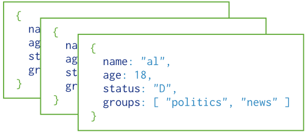

MEAN STACK COP
Full-stack JavaScript solution
Created by Jordan Ramey / @JordanRamey03

MEAN Overview
Why do you have to be so MEAN?
What is MEAN and how it's used
Shellraiser
MongoDB Shell
Simple find, insert, and update queries in the Shell

MEAN GEAN
Building a MEAN stack app
Yes... That is E
MEAN STACK
MEAN is an opinionated full-stack JavaScript framework - which simplifies and accelerates web application development.
$ sudo npm install -g mean-cli
$ mean init yourNewApp


With their powers combined!
Why MEAN?
- One Language (JavaScript)
- Consistent models across the stack
- Consistent practices across the stack
- Lightweight
MongoDB
A simple and scalable NoSQL document database
- JSON based models (BSON)
- Flexible schema and query selectors
- NOT ORACLE!!
Express
A simple Web framework for Node.js
- Used for easy routing and serving of files.
Running Express
var express = require('express');
var app = express();
var port = process.env.PORT || 8080;
var directory = __dirname + '/public';
app.use(express.static(directory));
app.get('/slides', function (req, res) {
res.sendfile(directory + '/slides.html');
})
app.listen(port);
AngularJS
Assists with creating single-page applications, which consist of one HTML page with CSS and JavaScript on the client side.
Node.js
Platform built on Chrome's JavaScript runtime for easily building fast, scalable network applications.
Running Node
var net = require('net');
var server = net.createServer(function (socket) {
socket.write('Echo server\r\n');
socket.pipe(socket);
});
server.listen(1337, '127.0.0.1');
Nodemon
Reloads the web server when changes are made
Mongoose
Casts and validates MongoDB models
Using Mongoose
var mongoose = require('mongoose');
mongoose.connect('mongodb://localhost/test');
var Cat = mongoose.model('Cat', { name: String });
var kitty = new Cat({ name: 'Zildjian' });
kitty.save(function (err) {
if (err) // ...
console.log('meow');
});
BSON [bee · sahn]
Short for Binary JSON, is a binary-encoded serialization of JSON-like documents. Like JSON, BSON supports the embedding of documents and arrays within other documents and arrays. BSON also contains extensions that allow representation of data types that are not part of the JSON spec. For example, BSON has a Date type and a BinData type.
Lets code!
MongoDB Shell
MEAN Stack
Config
url : 'mongodb://localhost/testdb'
Angular Controller
$scope.getAllTodos = function() {
Todos.get()
.then(function success(data) {
$scope.todos = data;
});
};
Angular Service
return {
get : function() {
var deferred = $q.defer();
$http.get('/api/todos').success(function(data) {
deferred.resolve(data);
});
return deferred.promise;
}
}
Mongoose
var mongoose = require('mongoose');
var schema = new mongoose.Schema( { text: 'string' } );
module.exports = mongoose.model('Todos', schema);
API Call
app.get('/api/todos', function(req, res) {
TodoCollection.find(function(err, todos) {
if (err)
res.send(err)
res.json(todos);
});
});